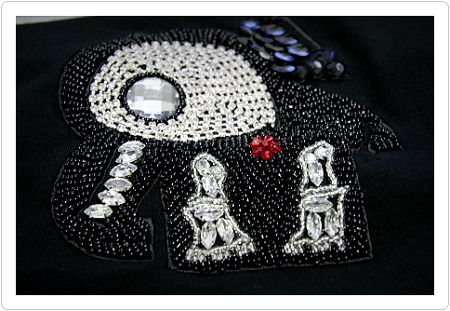

Dress Blog @ May 04, 2009
黑底细条纹双开叉西服+黑色小象体恤+黑色蛋糕裙+红色腰带+红色磨砂皮鞋
**5年前的蛋糕裙，百搭款，仍然深得喜爱；

**黑底细条纹双开叉西服，袖口被挽起两道，削弱了正装效果；

亮片、钻石和珠子锈出的饱满的小象图案，摒弃了亮片的低俗；


**难打理的红鞋子，舍不得经常穿它。

黑底细条纹双开叉西服+黑色小象体恤+黑色蛋糕裙+红色腰带+红色磨砂皮鞋
**5年前的蛋糕裙，百搭款，仍然深得喜爱；
**黑底细条纹双开叉西服，袖口被挽起两道，削弱了正装效果；
亮片、钻石和珠子锈出的饱满的小象图案，摒弃了亮片的低俗；

**难打理的红鞋子，舍不得经常穿它。
14 Responses to “Dress Blog”
2009-05-04
鞋子很漂亮，记得某位大师曰过：”好鞋半身衣“，^_^
2009-05-04
这鞋面真好看~
2009-05-04
喜欢第三张。呵呵～～～
2009-05-04
我好喜欢磨砂皮鞋的，但是觉得坐公车穿它太奢侈了，难打理，所以只能观望。
2009-05-04
据说磨砂皮鞋可以用鞋粉清洁、上色，但是真好麻烦！
2009-05-04
擦鞋店是可以帮弄的，可是，到底是有色粉剂，搞不好会弄脏袜子。总之，磨砂鞋只是偶尔穿穿搭搭色的，好难伺候。
2009-05-04
每天都穿得这么好看，让人养眼。^o^
鞋子细节很漂亮，不过那个蝴蝶结应该很难打理吧？第二张侧身照片，想象里面是抹胸式的连身裙，什么效果？:-)手上戴几个blingbling的大圈，什么效果？
好期待哦
2009-05-04
磨砂皮可以就拿到水里洗，用牙刷刷，干了一样，反正我是这么干的。
2009-05-04
光光，你太牛了，颜色会被洗淡吧？抹胸的连衣裙是有滴，不过bling bling的手圈就算啦，呵呵~
2009-05-04
5年前的裙子？你太厉害了。
磨砂皮俺也是拿水刷过，刷鞋粉太麻烦了。
我超级喜欢你T-SHIRT上的那头小象~~
2009-05-04
你的入门照片总是很有味道。比较艺术。
2009-05-04
这小象太奇妙了，老眼昏花的我以为是一颗大蘑菇下面蹲了两个美女呢。呵呵～～～
2009-05-05
哇,这回把身材显出来了. 让人忌妒啊~~~~~
2009-05-05
是PINKO家的T吧?!今年好像出的猴子的,期待ing..
Leave A Reply
存档只读，评论已关闭。